File: 000960.gt.txt (if the image is defective, simply delete all Arabic text and the line will be excluded)
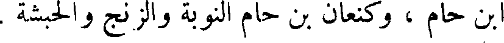
ابن حام ، وكنعان بن حام النوبة والزنج والحبشة .
File: 000961.gt.txt (if the image is defective, simply delete all Arabic text and the line will be excluded)
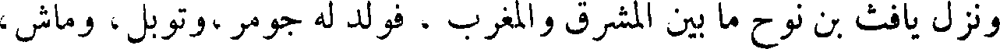
ونزل يافث بن نوح ما بين المشرق والمغرب ، فولد له جومر ،وتوبل ، وماش ،
File: 000962.gt.txt (if the image is defective, simply delete all Arabic text and the line will be excluded)
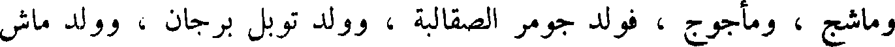
وماشج ، ومأجوج ، فولد جومر الصقالبه ، وولد توبل برجان ، وولد ماش
File: 000963.gt.txt (if the image is defective, simply delete all Arabic text and the line will be excluded)
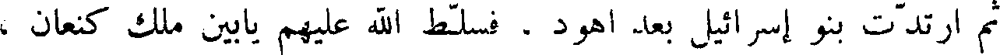
ثم ارتدت بنو إسرائيل بعد أهود . فسلط الله عليهم يابين ملك كنعان ،
File: 000964.gt.txt (if the image is defective, simply delete all Arabic text and the line will be excluded)
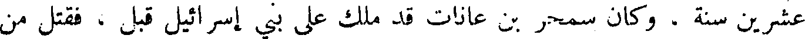
عشرين سنة ، وكان سمحر بن عانات قد ملك على بني إسرائيل قبل ، فقتل من
File: 000965.gt.txt (if the image is defective, simply delete all Arabic text and the line will be excluded)
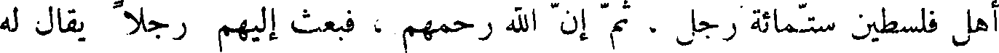
أهل فلسطين ستمائة رجل ، ثم إن الله رحمهم ، فبعث إليهم رجلا يقال له
File: 000966.gt.txt (if the image is defective, simply delete all Arabic text and the line will be excluded)
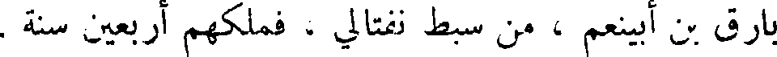
بأرق بن ابينعم ، من سبط نفتالي ، فملكهم أربعين سنة .
File: 000967.gt.txt (if the image is defective, simply delete all Arabic text and the line will be excluded)
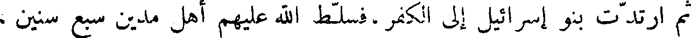
ثم ارتدت بنو إسرائيل إلى الكفر ،فسلط الله عليهم أهل مدين سبع سنين ،
File: 000968.gt.txt (if the image is defective, simply delete all Arabic text and the line will be excluded)
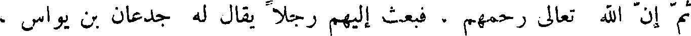
ثم إن الله تعالى رحمهم ، فبعث إليهم رجلا يقال له جدعان بن يواس ،
File: 000969.gt.txt (if the image is defective, simply delete all Arabic text and the line will be excluded)
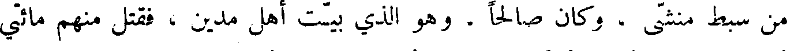
من سبط منشى ، وكان ابن صالحا . وهو الذي بيت أهل مدين ، فقتل منهم مائتي
File: 000970.gt.txt (if the image is defective, simply delete all Arabic text and the line will be excluded)
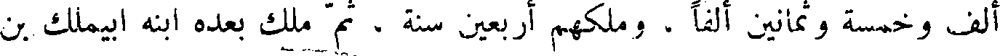
ألف وخمسة وثمانين ألفا ، وملكهم أربعين سنة ، ثم ملك بعده ابنه ابيملك بن
File: 000971.gt.txt (if the image is defective, simply delete all Arabic text and the line will be excluded)
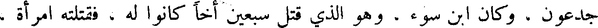
جدعون ، وكان ابن سوء ، وهو الذي قتل سبعين أخا كانوا له ، فقتلته امرأة ،
File: 000972.gt.txt (if the image is defective, simply delete all Arabic text and the line will be excluded)
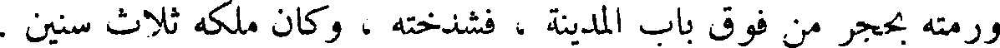
ورمته بحجر من فوق باب المدينة ، فشدخته ، وكان ملكه ثلاث سنين .
File: 000973.gt.txt (if the image is defective, simply delete all Arabic text and the line will be excluded)
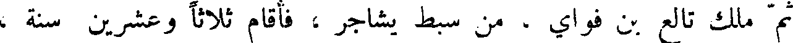
ثم ملك تالع بن فواي ، من سبط يشاجر ، فأقام ثلاثا وعشرين سنة ،
File: 000974.gt.txt (if the image is defective, simply delete all Arabic text and the line will be excluded)
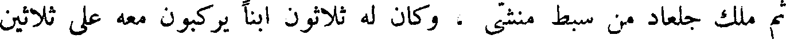
ثم ملك جلعاد من سبط منشى ، وكان له ثلاثون ابنا يركبون معه على ثلاثين
File: 000975.gt.txt (if the image is defective, simply delete all Arabic text and the line will be excluded)
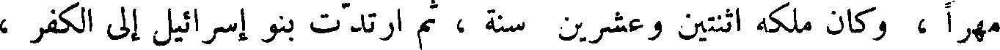
مهرا ، وكان ملكه اثنين وعشرين سنة ، ثم ارتدت بنو إسرائيل إلى الكفر ،
File: 000976.gt.txt (if the image is defective, simply delete all Arabic text and the line will be excluded)
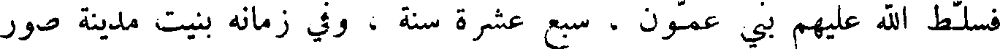
فسلط الله علهم بني عمون ، سبع عشرة سنة ، وفي زمانه بنيت مدينة صور
File: 000977.gt.txt (if the image is defective, simply delete all Arabic text and the line will be excluded)
بالشأم ، وسامهم سوء العذاب .
File: 000978.gt.txt (if the image is defective, simply delete all Arabic text and the line will be excluded)
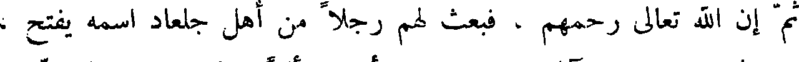
ثم إن الله تعالى رحمهم ، فبعث لهم رجلا من أهل جلعاد اسمه يفتح ،
File: 000979.gt.txt (if the image is defective, simply delete all Arabic text and the line will be excluded)
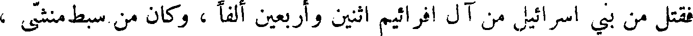
فقتل من بني إسرائيل من آل افرائيم اثنين وأربعين ألفا ، وكان من سبط منشى ،
File: 000980.gt.txt (if the image is defective, simply delete all Arabic text and the line will be excluded)
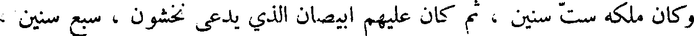
وكان ملكه ست سنين ، ثم كان عليهم ابيصان الذي يدعى نخشون ، سبع سنين ،
File: 000981.gt.txt (if the image is defective, simply delete all Arabic text and the line will be excluded)
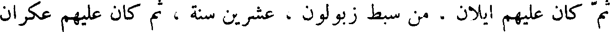
ثم كان عليهم ايلان . من سبط زبولون ، عشرين سنة ، ثم كان عليهم عكران
File: 000982.gt.txt (if the image is defective, simply delete all Arabic text and the line will be excluded)
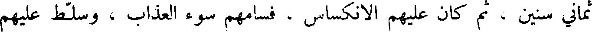
ثماني سنين ، ثم كان عليهم الانكساس ، فسامهم سوء العذاب ، وسلط عليهم
File: 000983.gt.txt (if the image is defective, simply delete all Arabic text and the line will be excluded)
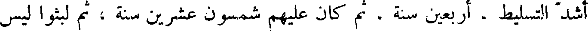
اشد التسليط ، أربعين سنة ، ثم كان عليهم شمسون عشرين سنة ، ثم لبثوا ليس
File: 000984.gt.txt (if the image is defective, simply delete all Arabic text and the line will be excluded)
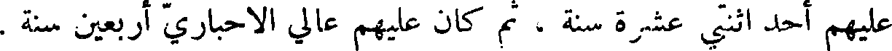
عليهم أحد اثنتي عشرة سنة ، ثم كان عليهم عالي الاحباري أربعين سنة .
File: 000985.gt.txt (if the image is defective, simply delete all Arabic text and the line will be excluded)
ثم كان عليهم شمويل النبي ، وهو الذي ذكره الله تعالى إذ قالوا لنبي
File: 000986.gt.txt (if the image is defective, simply delete all Arabic text and the line will be excluded)
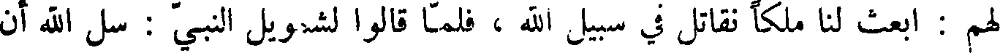
لهم ابعث لنا ملكا نقاتل في سبيل الله ، فلما قالوا لشمويل النبي : سل الله أن
File: 000987.gt.txt (if the image is defective, simply delete all Arabic text and the line will be excluded)
عابر بن شالح
File: 000988.gt.txt (if the image is defective, simply delete all Arabic text and the line will be excluded)
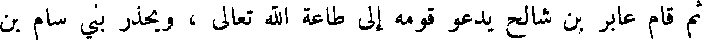
ثم قام عابر بن شالح يدعوا قومه إلى طاعة الله تعالى ، ويحذر بني سام بن
File: 000989.gt.txt (if the image is defective, simply delete all Arabic text and the line will be excluded)
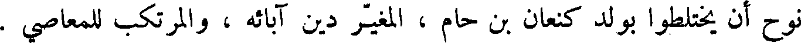
نوح أن يختلطوا بولد كنعان بن حام ، المغير دين آبائه ، والمرتكب للمعاصي .
To Save: `Ctrl+s`, make sure to choose `Webpage, complete`!